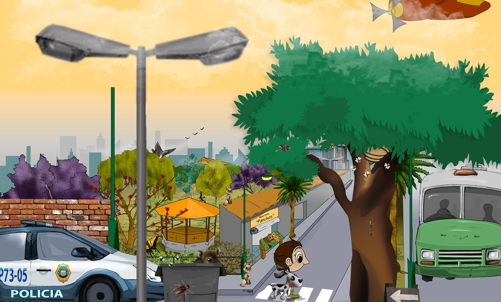
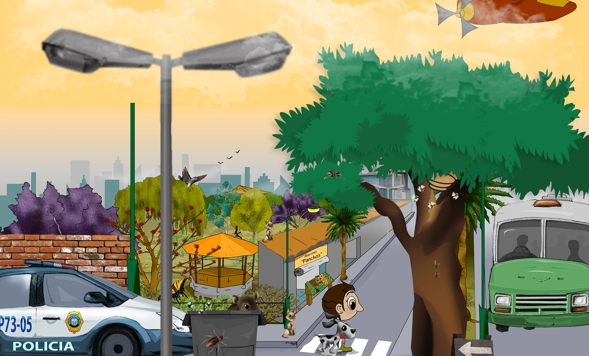

Ecosistema: Ciudad
En las ciudades dominan las casas, edificios, calles y carros, pero sobre todo domina una especie: el ser humano. Hay pocas plantas y animales que se adaptan a estas condiciones y muchos de ellos vienen de otros países.
Una gran cantidad de camiones transportan alimento desde el campo y otros retiran el desperdicio que producimos. También el agua y la energía que utilizamos para la electricidad vienen muy de lejos.
 

Conoce algunas actividades y juegos
Al igual que la rata negra y los ratones de casa, somos roedores originarios de Asia. Desde hace mucho tiempo empezamos a subirnos a los barcos y a viajar por todo el mundo. Somos tan exitosas como los humanos y los seguimos muy cercanamente a todas partes para utilizar sus desperdicios y sí que producen basura.
Las frutas, verduras y otros productos que encuentras en abarrotes y supermercados venimos del campo. Para desarrollarnos necesitamos un ambiente sano, con suelo rico, agua disponible, y algunos insectos que ayuden aque nuestras flores produzcan frutos. ¿Sabes de dónde venimos cuando nos consumes?
Desde mediados de 1800 fuimos traídos de Inglaterra a Estados Unidos y Canadá. De ahí hemos viajado a muchos otros lugares del continente y ahora somos una de las especies más comunes en las ciudades. Al ser más abundantes competimos con otras especies de pájaros por alimento, por nidos

Soy un insecto de cuerpo aplanado con grandes antenas. Soy omnívoro, es decir me alimento de todo. La mayoría de mis parientes viven en los bosques y selvas, pero unas pocas especies preferimos la acción en la ciudad.
Vivimos en todo el mundo, al igual que los seres humanos. Podemos detectar malos olores desde muy lejos y llegar rápidamente a donde se producen para ver qué podemos comer. Debido a nuestros hábitos transmitimos gran cantidad de enfermedades.
Fui domesticado hace miles de años en Asia y desde entonces soy una mascota muy popular. Soy carnívoro y aunque me alimentan con croquetas y comida especial para gatos, cuando puedo me encanta salir a cazar ratones y pajaritos.
Soy originaria de Europa y Asia. Nuestro color original era el gris con el cuello de colores morado y verde metálico y dos barras negras en las alas, pero actualmente puedes encontrarnos de muchos colores y formas. Vivo en grandes grupos y me alimento de semillas, pero en la ciudad mi dieta es más amplia.
Soy una de las especies más abundantes en las ciudades y en el mundo. Mis parientes han ido cambiando la naturaleza y convirtiéndola en ciudades con edificios, calles, y carros. Utilizamos gran cantidad de energía y agua y producimos muchos desperdicios. Me alimento de plantas y animales muertos que son traídos del campo y muchas veces de países lejanos.
Aunque no lo creas, soy pariente cercano del lobo. También soy carnívoro pero me he especializado en atrapar croquetas. La gran variedad de razas de perros son el producto de la selección que han hecho los humanos de nuestro tamaño, color, pelo, y comportamiento.
Somos insectos sociales que vivimos en hormigueros, parecidos a ciudades enterradas. Nuestras grandes agrupaciones nos permiten ser muy eficientes en obtener alimento y defendernos de nuestros enemigos ¡Trabajamos siempre en equipo! Algunas especies somos nativas y otras hemos sido introducidas de otros países accidentalmente.
Descrubre más en este PDF
Somos insectos sociales originarios de Europa, África y Asia. En cada colmena vivimos tres tipos de individuos: las abejas obreras, los zánganos y la reina. Las primeras somos las que trabajamos y los demás se reproducen. Nos alimentamos de polen y néctar de las flores y al mismo tiempo somos responsables que muchas flores produzcan frutos. ¡Somos muy importantes!
Conoce más sobre los polinizadores
Descrubre más en este PDF
Ecosistema: Campo
Por todo el país hay campos en donde se producen verduras, frutas, leche de las vacas, carne y lana de los borregos, huevos y carne de las gallinas y muchos otros productos que se transportan a la ciudad para alimentar a sus habitantes.
Gran cantidad de frutas y verduras se originaron en México, en el continente americano, como el maíz, la calabaza, el chile, el cacao, y la vainilla. Otras fueron traídas de los otros continentes, como la lechuga, la col, el trigo, el café, el mango y la manzana. El guajolote o pavo se domesticó en México, pero las vacas, borregos, cerdos, cabras y gallinas vienen de Europa y Asia.
Conoce algunas actividades y juegos
Soy un mamífero omnívoro, es decir, que como de todo, plantas, raíces, insectos, hongos, huevos y hasta basura. Tengo un sentido del olfato muy bueno y puedo distinguir el olor de los hongos enterrados bajo el suelo. Mi principal depredador es el ser humano.
Soy un mamífero herbívoro muy social. Me gusta vivir con mis familiares. Me trajeron de Europa y Asia. Los seres humanos utilizan mi lana para hacerse ropa, pero también utilizan mi leche, cuero y hasta mi carne, son mis depredadores.
Somos mamíferos herbívoros procedentes de Europa. A diferencia de los toros y las vacas, nosotros nos dedicamos al trabajo pesado. Antes que hubiera tractores, ayudábamos a los campesinos a trabajar la tierra para la siembra y en muchos lugares seguimos ayudando.
Soy la hembra del gallo. Somos muchos tipos de gallinas y gallos ya que los humanos han seleccionado nuestro tamaño, color y tipo de plumas y hasta nuestro comportamiento. En el campo tenemos que cuidarnos de zorras, tlacuaches y comadrejas, pero nuestro principal depredador son los seres humanos.
Soy un ave omnívora, como granos, insectos y algunas lagartijas. Soy originario de Asia. En el campo, además de ayudar a las gallinas en la producción de huevos y pollitos, soy el principal reloj despertador. Kikirikiiii.
En la milpa se cultiva el maíz, calabaza, frijol y se recogen los quelites como las guías de chayote, romeritos, verdolaga, epazote y la chaya. Tan sólo de maíz, existen 61 variedades. Seguramente conoces el maíz reventador de donde se producen las palomitas o el maíz que te comes con limón, sal y chilito. ¿Cuántas otras variedades has probado?
Descrubre más en este PDF
Ecosistema: Selva Húmeda
Las selvas crecen en las zonas tropicales donde hace mucho calor todo el año. En algunas llueve mucho y las plantas crecen todo el tiempo, mientras que en otras hay épocas secas y las plantas pierden sus hojas.
Hay una gran variedad de plantas y animales desde las pequeñas hormigas y hongos hasta los grandes depredadores, como el jaguar y el águila arpía.
Soy una de las grandes aves depredadoras en la selva. Me alimento durante el día de deliciosos monos, sabrosas martuchas, riquísimos osos hormigueros y otros animales que se trepan a los árboles.
Soy una de las serpientes más grandes en la selva. Soy un depredador de animales pequeños, como pájaros, ratones, conejos, y tlacuaches. Puedo treparme fácilmente a los árboles.
Soy un reptil depredador de gran tamaño que vivo en el agua. Por la noche me alimento de peces, tortugas, y uno que otro animal terrestre descuidado que se acerca al agua. Me gusta tomar el sol a la orilla del pantano.
Soy uno de los insectos de mayor tamaño y con más fuerza. Me alimento de madera y hojas en descomposición, ¡mmmmm, qué rico! Los machos tenemos un cuerno en la cabeza que utilizamos para escarbar y enterrarnos en el suelo y también para presumir.
Descrubre más en este PDF
Soy uno de los pericos más grandes y coloridos. Durante el día me alimento de nutritivos frutos y semillas. Vivo en los huecos de los árboles y casi siempre vuelo acompañada de mi pareja. ¿Verdad mi amor?
Soy el mamífero depredador más grande de la selva. Mis presas no tienen chance. Las puedo atrapar en los árboles, en el suelo o en el agua, durante el día o la noche. Me alimento de mamíferos, aves y reptiles. Puedo capturar animales tan grandes como un cocodrilo y tan pequeños como un ratón.
Soy una de las mariposas más grandes y llamativas de la selva. Durante el día me alimento de néctar de las flores y transporto su polen a otras flores. Me gusta volar por arriba de los arroyos. Cuando me paro, oculto mi brillante color azul ya que mis alas son de color café por abajo.
Descrubre más en este PDF
Soy un mamífero herbívoro. En el día me alimento de frutos y algunas hojas, pero también le entro a los huevos de pájaro que me encuentro en el camino. Utilizo mi larga cola como si fuera un quinto brazo. Vivo en grupos en la copa de los árboles y casi nunca me verás en el suelo. Más vale ser precavido ¿no?
Soy un mamífero herbívoro. En el día me alimento de las hojas verdes de los árboles y una que otra fruta. Casi nunca bajo de los árboles pues ahí estoy más seguro. Puedo rugir muy fuerte, y por eso me llaman aullador. Vivo en grupos pequeños con mi familia.
Soy un mamífero herbívoro. Por las mañanas y las tardes me alimento de deliciosas plantas, raíces, jugosos frutos y semillas del suelo de la selva, pero tengo unos grandes colmillos con los que me defiendo si alguien me quiere echar bronca. Vivo en grandes familias de hasta 60 pecaríes.
Soy un anfibio insectívoro. Por la noche me alimento de pequeños insectos que atrapo con mi larga lengua. Puedo buscarlos en el suelo o treparme a los árboles y sin hacer ruido, esconderme en las bromelias para atraparlos.
Soy el mamífero más grande y guapo de las selvas. Me alimento de plantas y me gusta mucho sumergirme en el agua, donde además de refrescarme y quitarme los mosquitos, me escondo de los depredadores que me quieren desayunar, comer o cenar.
Ecosistema: Bosque nublado
Los bosques nublados crecen en las montañas por arriba de las selvas húmedas y por debajo de los bosques templados. Como su nombre lo indica, están cubiertos de nubes gran parte del año y llueve constantemente.
Aquí viven una gran diversidad árboles con muchas epífitas, es decir plantas que creen sobre ellos sin causarles daño como las orquídeas, las bromelias y las lianas. Debido a la humedad es hogar de muchas ranas, sapos y salamandras y de gran variedad de especies muy interesantes.


Soy un tucán de color oscuro. Me alimento de frutos carnosos pero también de vez en cuando como pollos de otras aves. Anido en troncos huecos de árboles. Soy muy sociable y generalmente ando acompañado de muchos amigos.

También me llaman maguey de encino o gallito. Soy una planta epífita, que vive sobre los árboles sin causarles daño.
Entre mis hojas se acumula el agua de lluvia y ahí viven muchos insectos, alacranes, arañas, ranas y hasta culebras. Mis flores y frutos son de colores llamativos. La piña y el heno son mis parientes.
Descrubre más en este PDF
Soy el más pequeño de los gatos silvestres mexicanos. Soy nocturno, es decir, que mis actividades las realizo durante la noche. Con mis grandes ojos tengo muy buena visión nocturna. Me gusta trepar a los árboles en busca de pequeñas aves, ratones, lagartijas y ranas.
También me conocen como “yoloxochitl” que quiere decir: flor del corazón. Soy un árbol de hasta 30 metros de altura. Mis atractivas flores blancas son de gran tamaño. Mis frutos son rojos. Algunos de mis parientes viven en las ciudades embelleciendo los parques como árboles ornamentales.
Soy una mariposa de gran tamaño y atractivos colores. Aunque me parezco a otras mariposas tengo una distribución muy restringida en los bosques nublados de la Sierra Madre Oriental. Me alimento de néctar y polinizo a las flores cuando las visito.
Descrubre más en este PDF
Soy una víbora de color verde y puedo medir hasta un metro de largo. Utilizo mi veneno para inmovilizar a mis presas que son pequeños mamíferos, aves y reptiles. Puedo cazarlos en el suelo o trepar a los árboles para darles un buen susto.
Soy del tamaño de un perro pequeño, pero mucho más bravo. También me llaman brazo fuerte ya que diariamente hago ejercicio al trepar a los árboles con mis brazos y cola prensil. Mis grandes garras me ayudan a abrir hormigueros y termiteros para alimentarme con mi larga lengua de sabrosas hormigas y termitas.
Soy una de las aves más raras de México, tanto por mi apariencia como porque soy poco abundante. Soy inconfundible ya que poseo un cuernito rojo en la cabeza, como si fuera un unicornio. Me alimento de una gran variedad de hojas y frutos.
Y tanto hembras como machos somos muy platicadores.
Soy una de las especies de aves más elegantes y coloridas del país. Hago mis nidos en troncos de árboles y me alimento de sus frutos. Mis extraordinarios plumas de la cola adornaban los penachos de los grandes gobernantes del México prehispánico.
Soy una planta muy antigua que convivió con los dinosaurios. Puedo crecer hasta 10 metros de altura y semejar un gran paraguas. En algunos lugares me llaman “maquique” y utilizan mi tronco para hacer macetas, pero eso ya está prohibido porque afectaban seriamente a mi población.
Soy un anfibio también conocido como salamandra. Soy muy pequeño y vivo escondido en el suelo, debajo de las rocas, o entre la corteza de los árboles. Me alimento de minúsculos insectos que atrapo con mi larga y viscosa lengua. Podemos ser abundantes pero nos escondemos muy bien.
Me llaman así porque mi cabeza es canosa y mi cuerpo está cubierto de pelo negro. Soy un gran depredador de aves y mamíferos, puedo nadar y también trepar ágilmente a los árboles para alcanzar a mis presas. También me gustan algunas frutas. A veces ando solo o a veces en grupo.

Ecosistema: Bosque templado
Los bosques de pinos, oyameles y de encinos crecen en las montañas donde no hace mucho frío ni mucho calor y donde llueve sólo una parte del año.
Las plantas y animales de estos bosques se parecen mucho a las especies de Canadá y Estados Unidos, pero también hay muchas especies únicas de México.
Soy, junto con mi pariente del occidente, una cotorra muy, pero muy, especial ya que vivo en los bosques y no en las selvas, como los demás parientes. Me alimento de sabrosas semillas de pinos conocidos como piñones y de bellotas de encino. Anido en agujeros en las paredes rocosas de las montañas.
Soy pariente de los pinos y oyameles y me parezco mucho a estos últimos. Vivo cerca de los arroyos en las montañas del centro de Nuevo León. A diferencia de los oyameles, mis conos no se deshacen, pero también les encantan a las comelonas ardillas.
Descrubre más en este PDF
Aunque me parezco a mis parientes los zopilotes soy el único cóndor en el país. Me alimento de animales muertos, igual que tú ¿quieres un pedacito? Mi desplumada cabeza me ayuda a prevenir enfermedades que se pudieran pasar de mi alimento a las plumas. Mis alas son muy grandes y me permiten planear por las alturas y buscar alimento en una gran región.
Soy una de las águilas más grandes del país y símbolo nacional. Vivo en bosques y pastizales y me alimento de conejos, liebres y otros animales a los que detecto desde muy lejos con mi poderosa vista. Anido en lo alto de los árboles o en riscos. Mis pequeños polluelos, son de color blanco.
Soy el único oso que vive en México. Antes compartía el hogar con mi pariente el gigantesco Oso Gris. Me alimento principalmente de frutillas y raíces, algunas plantas y de vez en cuando me desayuno una que otra ardilla. Cuando trepo a los árboles dejo mis huellas marcadas en el tronco.
En México vivimos muchos pinos distintos ¿verdad tú? -Sí. Nuestras hojas son delgadas y largas en forma de aguja. No tenemos flores sino que nuestras semillas las guardamos en conos o piñas. Cuando nuestras semillas son de gran tamaño se llaman piñones y son muy sabrosas ¿verdad tú? Bueno, sí, eso nos han dicho las ardillas.
Descrubre más en este PDF
Soy uno de los mamíferos depredadores más grandes del bosque. Me alimento de tiernos venados, pecaríes, guajolotes y conejos, ¡pura carnita sin grasa! Vivo en grupos familiares y nos comunicamos mediante extraordinarios aullidos que se escuchan muy lejos. Todos los perros son mis parientes.
Soy un mamífero herbívoro que vivo en una gran variedad de lugares. Y no te rías eh, mi cola, bueno mi colita porque es pequeña, es de color blanco. Me alimento de hierbas y arbustos. Los machos tenemos astas en la cabeza. No son cuernos como los de los toros o borregos. Nosotros los producimos cada año y no son de hueso. Soy alimento de pumas y lobos y de cazadores, por lo que siempre ando muy alerta.
Soy uno de los pájaros menos abundantes en México. Vivo en los pastizales que se encuentran por arriba de los bosques en las altas montañas. Me alimento de semillas y pequeños insectos que a veces me cuesta trabajo atrapar. Construyo mi nido muy escondido entre los zacates, para que no lo encuentren los depredadores.
Soy un roedor con gran habilidad para trepar y correr sobre las ramas de los árboles. Utilizo mi gran cola para mantener el equilibrio y para protegerme del frío o del calor. Me encantan las semillas y los hongos. Siempre estoy alerta ya que soy parte del menú de halcones, zorras y muchos otros animales que comen carne de ardilla.
Vivo en los arroyos con agua fría de las montañas. Me gusta dar saltos fuera del agua de vez en cuando ¡splash! Me alimento de pequeños insectos, de acociles, y de peces pequeños. También como huevos de otros peces y de ranas. Soy el plato favorito de muchos animales incluyendo los seres humanos.
Soy un insecto volador que me alimento de néctar de las flores cuando adulto, pero cuando soy oruga me alimento de las hojas de una planta conocida como algodoncillo. Cada año volamos desde Canadá y Estados Unidos millones de mariposas Monarca para pasar cinco meses en el centro de México. No es por presumir, pero es la migración más larga y más numerosa de cualquier insecto.
Descrubre más en este PDF
Soy el conejo más pequeño de México y vivo en una zona muy reducida en la parte alta de los volcanes cerca de la Cd. de México. Me alimento de los pastos conocidos como zacates y por eso me llaman zacatuche. Además me escondo entre los zacates para que no me encuentren las hambrientas comadrejas. Mis amigos me llaman Teporingo.
Ecosistema: Ríos y lagos
Desde lo más alto de las montañas nacen pequeños arroyos, que poco a poco se convierten en grandes ríos y desembocan en lagos, lagunas y en el mar.
Gran cantidad de plantas y animales, grandes y pequeños, viven dentro del agua, y en sus orillas. Los grandes árboles protegen al río de los cambios de temperatura y muchas especies se reúnen a disfrutar del clima creado por el agua.

Conoce algunas actividades y juegos
Me llamo clarín, pero también me llaman zorzal o jilguero. Vivo en los bosques cercanos a arroyos, ríos y lagos. Como todos mis parientes, nos encanta el canto y somos excelentes tenores. Me alimento de pequeños insectos y de delicadas frutitas.
Soy un frondoso árbol pariente de pinos y cedros. Mi nombre quiere decir “el viejo del agua”, porque me encanta crecer a la orilla de ríos y lagos. De hecho, con mis hermanos formamos bosques ribereños a lo largo de los ríos. Y lo de “viejo”… pues si, somos árboles centenarios. Uno de nuestros tatarabuelitos sigue vivo con más de 2000 años.
Soy un árbol muy esbelto que crece a la orilla de los ríos. Soy pariente de los sauces. Mis hojas son delgadas. Algunos árboles tenemos flores masculinas y otros, tenemos flores femeninas. En la antigüedad me sembraban a la orilla de las chinampas, para que no se derrumbaran. Aun me puedes visitar en Xochimilco. Tenemos propiedades medicinales y a partir de nuestra corteza se inventaron las aspirinas.
Soy el tremendo castor. Con mis gigantescos dientes incisivos, que me crecen toda la vida, puedo cortar altos álamos y construir grandes presas y madrigueras en medio de los lagos. Cuando percibo peligro, me hecho un clavado y doy un fuerte coletazo al agua para hacer ruido y avisarle a los distraídos.
Soy una planta acuática que crezco abundantemente a la orilla de los lagos. Entre mis largas hojas las aves esconden sus nidos. Mis alargadas flores parecen salchichas ensartadas. Muchas culturas me han utilizado para hacer petates, canastas y sombreros.
Vivo cerca de los ríos y arroyos de las montañas ya que me alimento de insectos que viven en el agua. Brinco de roca en roca y me zambullo en el agua fría para atrapar a los insectos buceando. Mis plumas están cubiertas de grasa y me protegen del frío como si trajera un traje de buzo.
Soy la ninfa blanca. También me llaman “apapatla”, que significa en náhuatl “flor de hierba de agua”. Soy una planta acuática con bellísimas flores que abren durante el día y cierran por la noche. A las ranas les encanta descansar sombre mis amplias hojas que flotan sobre el agua.
Somos los pijijes de alas blancas. Somos patos esbeltos y muy elegantes. Vivimos cerca de lagos y lagunas. Nos alimentamos de semillas, caracoles y pequeños insectos. Nos gusta flotar en el agua ya que ahí nos sentimos más seguros. Hay menos peligros que en la tierra y conseguimos comida fácilmente con solo meter la cabeza al agua. Además, escondemos nuestros nidos en huecos de árboles.
Soy la delgada rana verde. Nado cuidadosamente bajo el agua y de vez en cuando salgo a la superficie asomando mis grandes ojos. Cuando una sabrosa libélula se distrae, de un largo lengüetazo ¡la pesco y me la engullo! Una vez que tengo la barriga llena, me subo a las hojas de una ninfa a descansar.
Soy una carpa ¡pero no de circo! Pertenezco a una de las grandes familias de peces de agua dulce. Muchos de mis parientes son endémicos de un río o de un lago, es decir, solamente viven ahí y en ningún otro lugar del mundo! Me alimento de pequeños animalitos pero siempre estoy cuidándome de voraces depredadores aéreos y acuáticos, y de uno que otro anzuelo.
A diferencia de muchos parientes yo soy vegetariana. Me alimento de tallos, hojas, flores y frutos de las plantas acuáticas y también de las hojas de los árboles que caen al agua. Mis parientes cercanos se extinguieron junto con los dinosaurios y ahora soy la única sobreviviente de la familia. Comparada con otras pequeñuelas soy bastante grandecita. Puedo medir hasta 60 cm de largo y pesar hasta 22 kilos.
Somos camarones de río, pero también nos conocen como langostinos o chacales. Nos gusta el agua bien limpia, y nos alimentamos de plantas y animales minúsculos. Nos escondemos en el fondo del río bajo las piedras para que no nos encuentren las voraces nutrias. ¿Verdad? Sí, -Sí, Sí.
Somos peces pequeñitos de color plateado de los grandes lagos. Nos gusta pasearnos acompañados, ya que así, nos cuidamos unos a otros de los peces grandes, de garzas y de martines pescadores. Nos alimentamos de animales minúsculos que viven en el agua y nos escondemos entre las plantas de nuestros depredadores.
Soy un anfibio del grupo de las salamandras, pero a diferencia de ellas, nosotros permanecemos toda la vida en el agua. Ahí respiramos usando unas branquias que parecen una gran melena. Nos alimentamos de pequeños insectos y pequeñas lombrices. Si nos dan una mordida en la cola o en una pata, podemos regenerarla de nuevo. ¿No es asombroso?
Ecosistema: Pastizal
En este ecosistema los pastos son muy abundantes y hay muy pocos arbustos y árboles.
Al igual que en los matorrales hace calor durante el día y frío durante la noche, y por eso la mayoría de los animales se alimentan por la mañana y por la tarde.

Huizachito soy mis niños aplanado del copete te invito a que seas mí amigo hoy, mañana y para siempre. Soy un arbolito de la familia del frijol. Mis hojas son pequeñitas y la forma de mi copa es aplanada. Tengo grandes espinas y mis flores amarillas en forma de esferitas son visitadas por muchos insectos que buscan néctar, que no es por presumir pero sabe... ¡riquísimo!
Soy una de las águilas más grandes del país y símbolo nacional. Vivo en bosques y pastizales y me alimento de sabrosos conejos, liebres, y otros animales a los que detecto desde muy, muy lejos con mis ojos poderosos. Anido en lo alto de los árboles o en riscos. Mis pequeños polluelos, son de color blanco.
Soy el animal terrestre de mayor tamaño en México. Vivía en grandes grupos llamados manadas, que caminaban por todo el norte de América. Actualmente los grupos son pequeños y vivimos en áreas reducidas. Me alimento de pasto. Cuando se acerca algún depredador a intentar comerse algún bebé, los adultos lo protegemos.
Soy el animal terrestre más veloz de México. ¡Puedo correr a más de 100 km por hora! ¿Unas carreritas? Me parezco a los venados pero no somos parientes. Vivo en grupos en el norte del país y me alimento de pastos y otras hierbas. Para que me alcance un depredador está difícil, a menos que me encuentren distraído.
Soy un reptil carnívoro. Con mi potente veneno puedo inmovilizar a mis presas en minutos. Me encantan los roedores de todos tamaños, pero también le entro a aves y lagartijas. Cuando se me acerca otro depredador lo prevengo con el sonido de mi cascabel.
Soy una codorniz y vivo en grupos de hasta 30 familiares. Me alimento de pequeños insectos y de nutritivas semillas. El color de mis plumas me ayuda a esconderme, ya que muchos depredadores, como zorras, coyotes, mapaches, gavilanes y tecolotes, me persiguen.
Aunque me ves pequeño, los perritos llaneros tiemblan al verme. Soy un mamífero muy, pero muy carnívoro y me puedo meter a sus madrigueras a sacarlos. Afortunadamente para los perritos, somos muy poco abundantes.
Vivimos en parejas y anidamos en agujeros hechos en el suelo por otras especies, como los perritos llaneros, que me caen muy bien porque me ahorran trabajo. Ahí ponemos entre 4 y 12 huevos. Nos alimentamos de lagartijas, chapulines, arañas, alacranes y termitas. ¡Nada más de platicarlo se me hace agua el pico!
Somos parientes de las ardillas, pero vivimos en grandes colonias. Nos alimentamos principalmente de plantas y semillas y uno que otro insecto. Siempre estamos vigilantes de las zorritas, coyotes y halcones y cuando se acercan demasiado, damos un grito de alarma: ¡Aguas, aguas! y nos escondemos de volada en la madriguera.
Soy un insecto volador de atractivos colores. Siempre estoy cerca del agua, ya que ahí pongo mis huevecillos. Desde chiquita, cuando soy larva, en el agua soy una feroz depredadora. De adulto me alimento de tiernas moscas y mosquitos que agarro en mis vuelos acrobáticos.
Descrubre más en este PDF

Ecosistema: Matorral
En gran parte del centro y norte de México crecen los matorrales, a veces llamados desiertos. Aquí hace muchísimo calor durante el día y puede hacer mucho frío durante la noche y llueve muy, pero muy poco.
Las plantas y animales del matorral están adaptados a estos cambios de temperatura. Aquí viven muchos cactos y plantas con hojas pequeñitas.


Conoce algunas actividades y juegos
Soy uno de los cactos más altos. Tengo forma de columna con los brazos levantados saludando al sol. Crezco lentamente y puedo vivir hasta qué creen... 300 años. Mis flores son visitadas por abejas, aves y murciélagos en busca de néctar. Los carpinteros hacen sus nidos en mi tronco que con sus picos a veces me hacen cosquillas.
Descrubre más en este PDF
Soy un árbol de lento crecimiento pariente del frijol. Mi madera es muy pesada por eso me llaman Palo Fierro. Tengo flores rosas y mis semillas crecen en vainas. A muchas otras plantas les gusta crecer cerca de mí, ya que les doy sombra y el suelo es fértil para crecer sanas y fuertes como yo. Seguramente has visto las artesanías que hacen de mi madera.
Soy una de las plantas más raras del mundo, parezco una zanahoria peluda parada de cabeza. Mis parientes son los larguiruchos ocotillos. Vivo en la Península de Baja California y en Sonora. Mis pequeñas flores son polinizadas por muchas especies de insectos y de aves.
Los carpinteros somos de las pocas especies que hacemos agujeros en los árboles y en los cactos y muchas otras especies los utilizan. Como otros pájaros carpinteros puedes reconocerme al volar ya que hago grandes columpios en el aire. ¡Uuu, Uuu, Uuu! Tengo una lengua muy larga con la que saco a los pequeños pero deliciosos insectos de los troncos.
Soy un reptil carnívoro. Con mi potente veneno puedo inmovilizar a mis presas en minutos. Me encantan los roedores de todos tamaños, pero también le entro a aves y lagartijas. Cuando se me acerca otro depredador lo prevengo con el sonido de mi cascabel.
Paso el día en la madriguera y salgo a comer por las mañanas y por las tardes cuando no hace mucho calor. Aunque me protejo de los depredadores con mi fuerte caparazón, mis crías no tienen la misma suerte. Son alimento de cuervos, tejones, zorrillos, correcaminos y halcones. Puedo vivir hasta 100 años.
Soy un cacto pequeño en forma de erizo de mar. Mis flores amarillas son grandes y llamativas. Soy muy raro en la naturaleza, pero me han logrado cultivar en algunos países para venderme como planta ornamental y ponerme en sus casas y jardines.
Descrubre más en este PDF
Soy una zorra pequeñita con grandes orejas. Salgo de cacería por la noche a buscar ratas canguro, conejos, liebres, insectos y pequeñas aves. Escarbo una madriguera en el suelo para tener a mis cachorritos.
Soy un reptil carnívoro. Me alimento durante el día de pequeños insectos y arañas que viven en el suelo. Me gusta vivir cerca de la vegetación ya que me protege de las serpientes y otros depredadores. En algunas poblaciones las hembras podemos tener crías aunque no haya machos.
Soy un cacto muy pequeñito que vivo enterrado. Mis flores son muy llamativas, pero cuando no tengo flores es difícil verme. Por eso algunos me conocen como roca viva. Los coleccionistas me buscan mucho y han hecho que sea muy escaso. Cuídenme, ¿no?
Descrubre más en este PDF
Tengo unas orejas muy largas que me ayudan a enfriar cuando hace mucho calor. A diferencia de los conejos, las liebres no hacemos agujeros para tener a nuestras crías, simplemente los tenemos sobre la superficie del suelo. Además, nuestros bebés nacen con los ojos abiertos y con pelo, muy guapos, listos para dar el salto. Nos alimentamos de hierbas, pastos y arbustos.
Soy una araña de gran tamaño. Me alimento de insectos pero puedo comer hasta lagartijas. Cuando me molestan puedo lanzar mis pelos que causan ardor. A pesar de esta defensa tengo muchos depredadores entre los mamíferos, aves y reptiles, pero ninguno tan temerario como la avispa gigante.
Descrubre más en este PDF
Soy un árbol con un tronco muy grande en su base, de ahí mi nombre. También me llaman sotolín. Sólo vivo en el Valle de Tehuacán pero en algunos lugares me cultivan como planta ornamental para lucirme en sus casas y jardines. Puedo crecer en condiciones muy extremas de calor y de sequía, al igual que los cactos.
Para nada soy pariente de los canguros, pero mis largas piernas y mi cola me ayudan a dar tremendos saltos. Me alimento de semillas e insectos que guardo en unas bolsitas cerca de la boca. Soy nocturna y me persiguen una gran cantidad de depredadores, como víboras, tecolotes y zorritas.
Me llaman así, porque casi siempre ando caminando con prisas. Me alimento de lagartijas, pequeñas serpientes, insectos y tarántulas. Delicioso ¿no? Hago mi nido entre las ramas de los cactos para protegerlo. Me corretean los coyotes, zorras y desde el aire... los gavilanes y halcones. ¡Adiós, tengo prisa!
Soy un cacto en forma de columna, que además de espinas tengo largas cerdas que parecen pelo blanco. Muchas aves me utilizan para poner sus nidos. Mis flores de color amarillo rosado se abren solamente por la noche y se ponen a contar estrellas. Los pájaros se comen mis frutos y dispersan las semillas.
Descrubre más en este PDF
También soy un cacto muy pequeñito pero me parezco a los magueyes. Soy de crecimiento muy lento y mis poblaciones están muy restringidas. Las cabras me hacen mucho daño. Ah, un mensaje para ellas: ¡comelonas!
Descrubre más en este PDF
Ecosistema: Selva seca
Las selvas secas crecen en lugares cálidos en donde las estaciones son muy marcadas. Durante la temporada de lluvias, la selva está muy verde, pero en la temporada de secas, cuando no llueve, las plantas pierden sus hojas.
Sus árboles de hojas pequeñitas no son muy altos y como entra mucha luz, crecen gran cantidad de arbustos y pequeños árboles, es difícil caminar en estas selvas. Entre los árboles hay muchos parientes del copal y del frijol de donde cuelgan los nidos de las calandrias.

Conoce algunas actividades y juegos
Soy un ave muy llamativa de color anaranjado con negro. Mis nidos son fáciles de reconocer ya que son grandes obras que cuelgan de los árboles como largas bolsas. También nos llaman calandrias.
Soy un murciélago nectarívoro, eso quiere decir que me alimento de néctar de las flores y cuando las visito les comparto el polen de otras flores que se me queda pegado en el pelo. Paso el día escondido en cuevas y en otros lugares oscuros y salgo al anochecer en busca de aventuras.
También me llaman maculis o palo de rosa. Modestia aparte, soy uno de los arboles más distinguidos de la selva seca, ya que mis abundantes flores rosas resplandecen en el paisaje antes de la época de lluvias. Mis semillas son aladas y pueden viajar grandes distancias impulsadas por el viento.
Soy el escurridizo cacomixtle. Soy un mamífero pariente del mapache. Mi cola es larga y con anillos blancos y negros. Por las noches, trepo a los árboles con gran agilidad donde busco pequeños animales que me sirvan de cena.
Soy una gran lagartija. Pongo entre 15 y 60 huevos de donde nacen pequeñas iguanitas de color verde brillante. Me encanta trepar a los árboles a comer flores y hojas jóvenes y frescas, sobre todo si están cerca de algún río, ya que cuando me asustan brinco al agua y desaparezco nadando rápidamente.
Soy un árbol muy fácil de reconocer. Mi corteza es rojiza y cuando se descarapela, mi tronco queda muy suavecito. Mi madera se utiliza para la construcción de casas, canoas y cercas. Mis parientes son los olorosos copales.
Soy un ave del tamaño de una gallina. Prefiero caminar y trepar a las ramas de los árboles que andar volando. Me gusta hacer mucho ruido por las mañanas y las tardes en compañía de la familia. Me alimento de granos y algunos sabrosos insectos.
Soy una culebra muy esbelta. Mi color verde me protege ya que me confundo con la vegetación en donde vivo. Me encanta treparme a los árboles para buscar lagartijas o ratones desde lo alto. Mi cabeza parece una lanza y puedo abrir una gran boca para atrapar a mis presas.
Soy el más pequeño de los zorrillos manchados. Vivo exclusivamente en las selvas secas de la costa del Pacífico. Me alimento de insectos, de aves, huevos, pequeños mamíferos y a veces de frutas y semillas. Y si me asustas me defiendo con mi inconfundible aroma.
Soy un lagarto cabezón y mi piel es como chaquira. Me alimento de los huevos de las aves. Al igual que mi pariente el lagarto de Gila, tengo un veneno muy poderoso, pero no te preocupes, soy lento y difícilmente puedo causar problemas.
¿Nos has oído cantar? Nos conocen como cigarras o chicharras. Somos insectos parientes de las chinches. No somos los únicos insectos que producimos sonidos pero si somos los más escandalosos. Nos alimentamos de la savia de las plantas. Nuestros pequeños pueden vivir más de 10 años enterrados en la tierra.

Soy el sapo borracho, pero no creas que bebo demasiado. Me llaman así por el sonido que produzco. También me conocen como Uo, y como sapo excavador mexicano. Paso grandes temporadas enterrado y cuando caen las lluvias, salgo rápidamente a cantar para encontrar pareja. Somos inconfundibles.
Soy un mamífero muy especial ya que visto una armadura que me protege contra muchos depredadores. Me encanta escarbar el suelo en busca de insectos y sus deliciosas larvas. Cuando tengo hijos siempre son cuatrillizos.
Soy pariente de las arañas y de los elegantes tendarapos. Tengo ocho patas, un par de amenazantes pinzas y una veloz cola con un aguijón al final. De alrededor de 260 especies de alacranes que vivimos en México, solamente 16 son realmente venenosos.
Descrubre más en este PDF

Ecosistema: Océano Pacífico
El mar Pacífico es frío y puede ser muy profundo y sus costas son más secas que las del Golfo y el Caribe.
Aquí viven una gran cantidad de plantas y animales marinos y muchos otros en las islas y en las costas.Hay animales microscópicos y tan grandes como las ballenas.


Conoce algunas actividades y juegos
Soy un ave marina, también conocida como alcatraz. Me alimento de peces que atrapo echándome un gran clavado como flecha desde el aire. Para anidar nos reunimos en grandes colonias en islas rocosas.
Soy la más grande de las tortugas marinas. Puedo alcanzar más de dos metros de largo. Me reconoces fácilmente por mi caparazón que tiene cinco crestas. Me alimento casi exclusivamente de medusas. Mis tortuguitas corren mucho peligro cuando salen del nido ya que hay muchos animales que se las quieren comer. ¡Ayúdame a protegerlas!
Soy una marsopa, pariente de los delfines y ballenas. Soy la más pequeña de toda la familia y la más tímida. Mi hogar es muy restringido. Solamente vivo en una región muy pequeña en el extremo norte del Golfo de California. Me alimento de peces y calamares.
Soy una de las siete tortugas marinas que viven en México. Me reconoces por mi trompa que tiene forma de pico de halcón y en mis aletas puedes ver un par de garras. Me alimento de esponjas de mar, medusas, estrellas de mar y erizos. Mi caparazón de color ámbar ha sido muy utilizado para hacer diversas artesanías.
Soy un gran pez plano pariente de los tiburones. Me alimento de plancton, que son animales y plantas microscópicas que flotan en el agua. Con tan sólo abrir la boca me como miles de ellos. A veces salto fuera del agua.
Soy el mamífero más grande del planeta y uno de los animales de mayor tamaño que jamás haya existido. Soy solitaria y me alimento de pequeños camaroncitos. ¡Imagínate cuantos millones me como cada vez que abro la boca! Mis bebés toman alrededor de 400 litros de leche todos los días que es más o menos toda la leche que tú te tomas en dos años y un mes.
Soy una ballena muy divertida. Me encanta saltar fuera del agua. Los machos producen un canto muy interesante. ¿Lo has escuchado? Puedo vivir en grupos o andar solitaria. Al igual que la Ballena Azul, me encantan los camaroncitos, pero también como pececitos.
También me conocen como tortuga amarilla o cabezona. Después de la Tortuga Laúd soy una de las tortugas marinas más grandes. Me alimento de caracoles, cangrejos y peces. Hago un largo viaje de 12,000 km desde Japón a Baja California.
Soy pariente de camarones y langostas. Vivo en la orilla del mar entre las rocas. Me alimento de algas y de pequeños animalitos. Mi caparazón, me da protección pero para crecer tengo que salir de él y producir otro, me gusta estar a la moda siempre cambiando de ropa. A veces puedes encontrar nuestros trajes vacíos colgados de una roca.
Soy pariente del erizo de mar. Camino muy despacito sobre las rocas y sobre la arena. Me alimento de almejas y ostiones, corales, peces y cangrejos. Si pierdo alguno de mis brazos puedo hacerlo crecer de nuevo. Es increíble... ¿verdad?
También me conocen como agua mala, ya que para defenderme inyecto sustancias tóxicas a los que se acercan demasiado. Soy pariente de los corales pero nado libremente como si fuera una sombrilla que se abre y se cierra. Me alimento de pequeños peces que atrapo con mis tentáculos.
Soy un caracol carnívoro. Vivo entre las rocas que están a la orilla del mar. Me alimento de otras especies de caracoles, quitones y lapas. Produzco un líquido de color púrpura que ha sido utilizado para teñir textiles o telas desde tiempos prehispánicos.
Soy pariente de las estrellas de mar. Tengo grandes espinas de color morado y me alimento de las algas que crecen sobre los corales. Cuando no tengo depredadores dejo los platos limpiecitos. ¡Mmmmhhh!
Ecosistema: Golfo y Caribe
El Golfo y el Caribe tienen agua más caliente y son menos profundos y sus costas son más húmedas que las del Océano Pacífico.
Hay muchos manglares y arrecifes de coral, en donde viven muchas plantas y animales.


Soy un arbolito muy resistente a la sal y por eso puedo vivir a la orilla del mar. Vivo formando bosques con otras especies de mangles, pero me distingo de ellas por mis raíces que parecen zancos. Muchos insectos visitan mis florecitas amarillentas. Debajo del agua protegidos por mis raíces viven gran cantidad de peces, cangrejos y almejas.
Soy un ave marina pariente de los pelícanos. Los machos tenemos un saco rojo en la garganta que inflamos como globo para coquetear con las hembras. Me alimento de peces que generalmente le robo a otras aves cuando van volando. ¡Je je! Anidamos en grupos en los manglares.
Vivo cerca de las costas o de los lagos. Me alimento de peces que capturo con mis fuertes patas y largas garras. Los localizo desde el aire y me aviento en picada sobre ellos con las patas por delante para sujetarlos. Construyo un gran nido que utilizo año tras año junto con mi pareja.
Cuando pequeña soy carnívora y me alimento de camaroncitos y medusas pero ya de adulta soy herbívora y como pastos marinos y algas cerca de las costas. Los tiburones son mis depredadores al igual que los seres humanos. Al igual que otras tortugas puedo recorrer distancias inmensas en el mar.

A pesar de mi nombre, no soy pariente de los cangrejos sino que estoy más relacionado a las arañas y alacranes. Me consideran un fósil viviente, ya que desde hace millones de años no he cambiado de forma. Me alimento de gusanos, caracoles y otros animalitos.
Soy un mamífero carnívoro. Me gusta estar cerca del agua ya que me alimento de deliciosos cangrejos, peces y lagartijas. Puedo treparme a los árboles con gran facilidad. Soy inconfundible por ese antifaz que llevo en la cara y mi hermosa cola anillada. Mis huellas en el lodo parecen manitas de niño.
Soy pariente de cangrejos y camarones. Vivo en la orilla del mar. Me protejo viviendo dentro de una casita vacía de caracol que cargo conmigo. Cuando crezco tengo que buscar una más grande porque si no viviría muy apretado. Me alimento de algas y de pequeños pedacitos de materia orgánica, pero puedo pellizcar con gran fuerza si me molestan.
Soy un ave marina inconfundible, por mi color, mi pico y mis largas y flacas patas. Vivo en grandes grupos cerca de las costas. Me alimento de pequeños camaroncitos que le dan el color a mis plumas rosas. La vida en grupo nos permite estar más seguros ya que es más fácil que nos demos cuenta si hay depredadores a la vista.
Soy una de las tortugas marinas más pequeñas. Me alimento de medusas, langostas, camarones, caracoles, peces, pastos marinos y algas, que son riquísimos. Como las otras tortugas marinas, después de varios años en alta mar, regreso a la playa donde nací.
Los marineros inventaron a las sirenas al conocerme. También me llaman vaca marina, pero no me confundas con la vaquita del Golfo de California. Soy un mamífero marino totalmente herbívoro. Me alimento de pastos marinos. Puedo permanecer hasta 20 minutos bajo el agua antes de salir a respirar. ¡Soy un gran buzo!
También me llaman picuda. Soy un depredador voraz. Permanezco muy quietecito y cuando pasa algún pez distraído... ¡¡Zaz!! Ni cuenta se da por dónde llega el trancazo. Cuando jóvenes vivimos en grupos, pero al crecer nos volvemos solitarios.
Soy el pariente inteligente de caracoles y almejas. Vivo entre las rocas sumergidas. Me alimento de cangrejos y camarones. Soy solitario y territorial, es decir que no dejo que otros bichos se acerquen por donde yo vivo. Mi piel cambia de color y de esta forma me vuelvo invisible entre las rocas.
Aunque no lo parecemos, somos animales coloniales. Si nos ves de cerca te darás cuenta que estamos formados por miles de pequeños animalitos llamados pólipos. Somos carnívoros y nos alimentamos de animales aún más pequeños que nosotros conocidos como zooplancton. -Hazte para allá. No, tú hazte para allá.